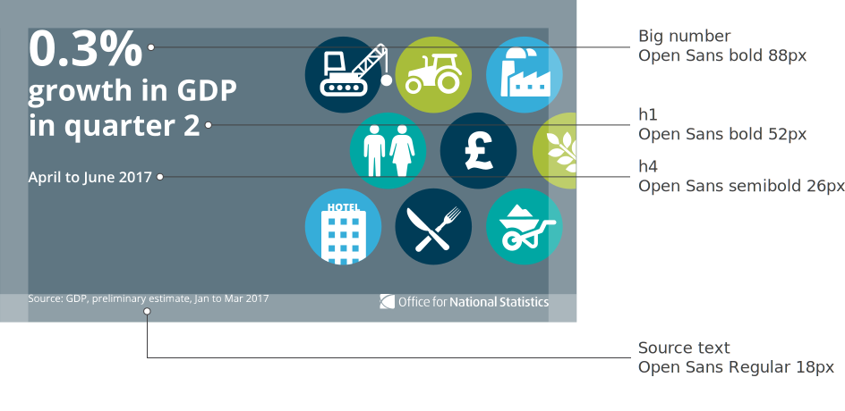

The following typographic styles should be adhered to on a full width social media graphic (1024px).
Open Sans Bold 88px
17%
h1 Open Sans Bold 52px
h2 Open Sans Bold 42px
h3 Open Sans Bold 32px
h4 Open Sans SemiBold 26px
Open Sans Regular 22px
Open Sans Regular 18px
Pleae note, this example is not to scale.
